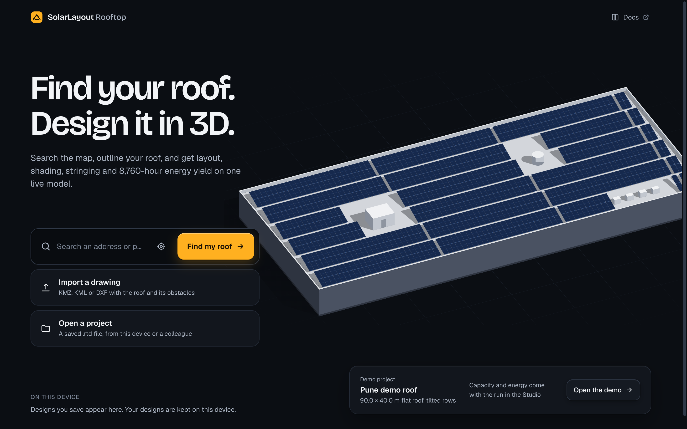
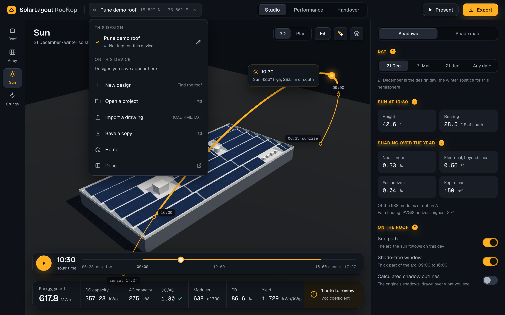
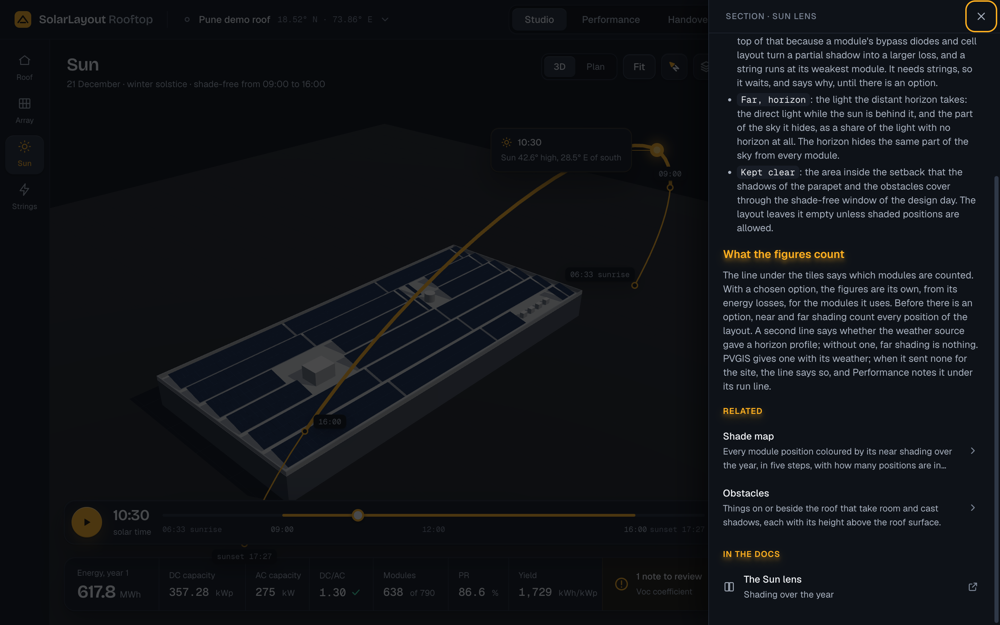

The Rooftop docs are live at solarlayout.app/docs/rooftop, and nothing in the app leads to them. Three ways in, each opening the docs in a new tab so the design stays open, each marked with the arrow out of a box that says the link leaves the app. Home has Docs at the right of its header: Home is outside the shell and has no project menu. The project menu, on every page and size, ends with a Docs row, to the docs' first page. The help sheet ends every topic with In the docs: the docs page and section that tell more (here Shading over the year opens The Sun lens at its section), after the Related topics, which stay in the app.
Two new icons: a book for the docs, and the arrow out of a box. Every topic names its page in its front matter, checked by the help gate as Related is. The address comes from one setting per environment: staging's app opens staging's docs. Desktop: the project menu drops from the design's name; the help sheet stands at the right.


